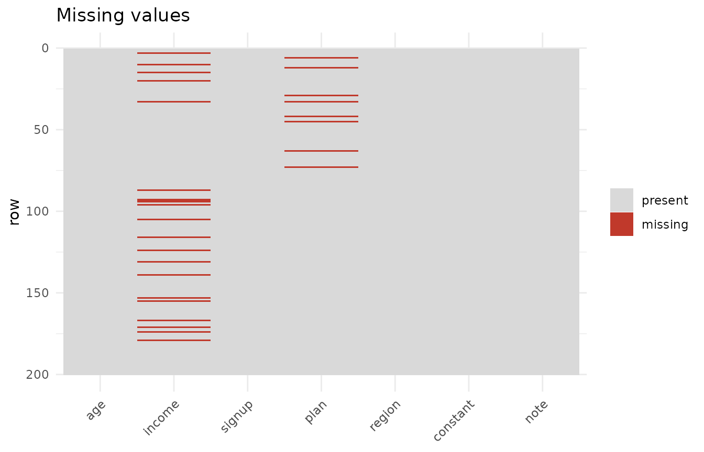
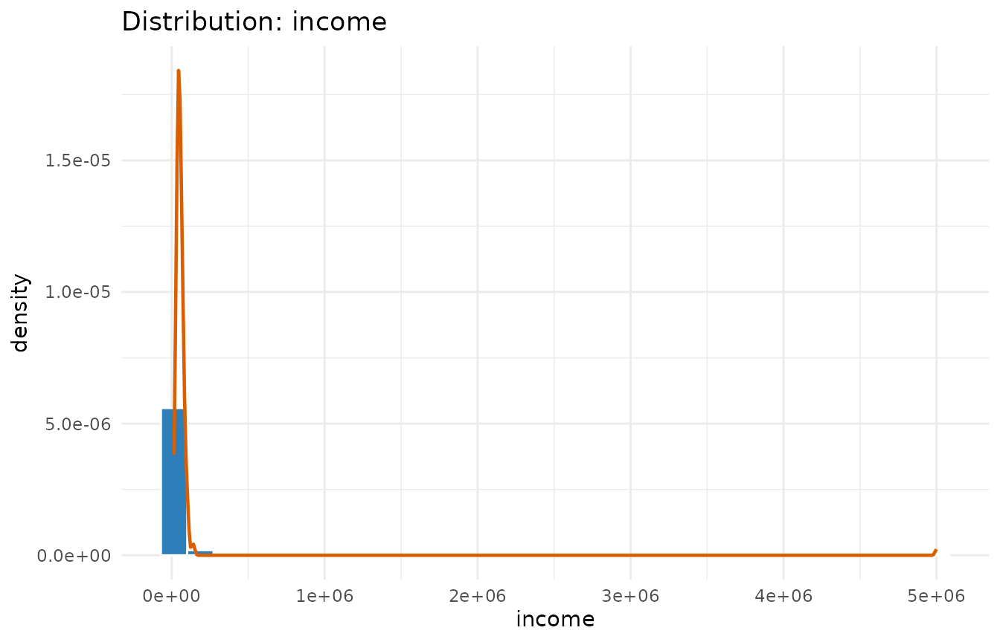
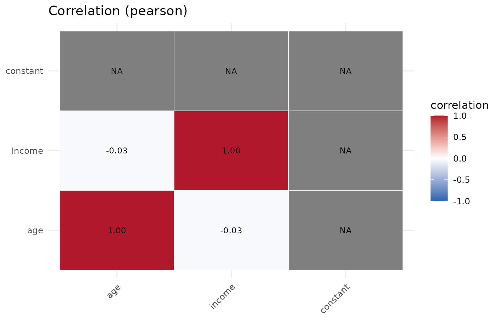
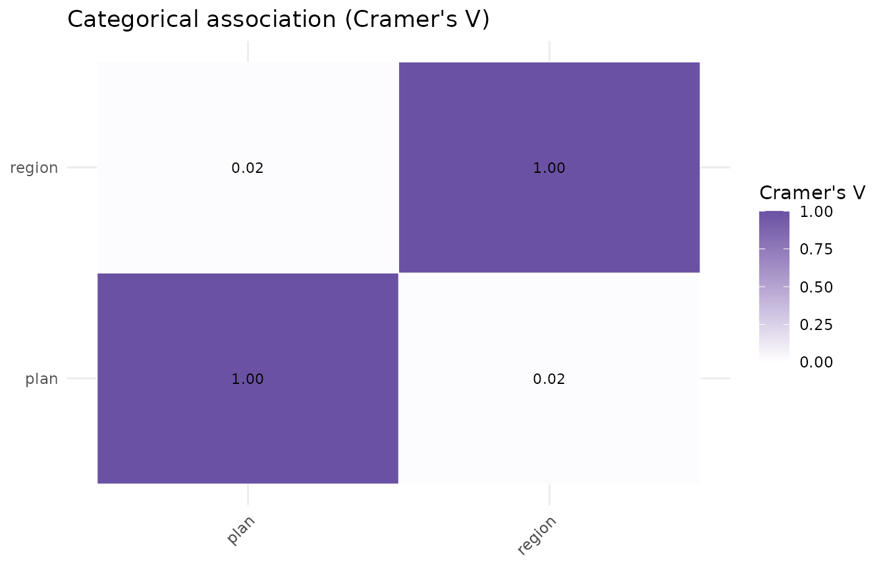

dataProfilerR turns a data frame into a structured
profile with one call: type inference, missing-value analysis, summary
statistics, normality tests, outlier detection, correlation, a
data-quality score, and ggplot2 figures.
A deliberately messy dataset
To show what the profiler surfaces, here is a small frame with missing values, an outlier, a constant column, and a high-cardinality text column.
set.seed(1)
n <- 200
df <- data.frame(
age = round(rnorm(n, 40, 12)),
income = c(rlnorm(n - 1, log(50000), 0.4), 5e6), # one extreme outlier
signup = as.Date("2025-01-01") + sample(0:600, n, replace = TRUE),
plan = sample(c("free", "pro", "enterprise"), n, replace = TRUE),
region = sample(c("NA", "EU", "APAC"), n, replace = TRUE),
constant = 1L, # zero-variance column
note = replicate(n, paste(sample(letters, 12), collapse = "")),
stringsAsFactors = FALSE
)
df$income[sample(n, 20)] <- NA # inject missingness
df$plan[sample(n, 8)] <- NAOne call to profile it
p <- profile_data(df, dataset_name = "customers")
#> Warning in stats::cor(num_df, use = "pairwise.complete.obs", method = m): the
#> standard deviation is zero
#> Warning in stats::cor(num_df, use = "pairwise.complete.obs", method = m): the
#> standard deviation is zero
#> Warning in stats::cor(num_df, use = "pairwise.complete.obs", method = m): the
#> standard deviation is zero
#> Warning in stats::cor(num_df, use = "pairwise.complete.obs", method = m): the
#> standard deviation is zero
p
#> <data_profile>
#> dataset : customers
#> size : 200 rows x 7 columns
#> types : categorical=2, date=1, integer=1, numeric=2, text=1
#> missing : 2.0% of cells; 86.5% of rows complete
#> quality : 96.2 / 100 (grade A)
#> most missing: income (10.0%), plan (4.0%)
#> use summary() for details and plot() for figures.print() gives the headline: dimensions, type breakdown,
missingness, and the quality score. Note the score is below 100 – the
missingness and the constant column both cost points.
Drilling in with summary()
summary(p)
#> Data profile for 'customers' (200 x 7), quality 96.2 (A)
#>
#> -- numeric summary --
#> column n n_missing mean sd variance min q1
#> age 200 0 40.385 11.15 1.243180e+02 13.00 33.00
#> income 180 20 82158.549 369253.45 1.363481e+11 15743.93 40392.28
#> constant 200 0 1.000 0.00 0.000000e+00 1.00 1.00
#> median q3 max iqr skewness kurtosis
#> 39.00 47.00 69 14.00 0.190 -0.199
#> 50065.35 67074.75 5000000 26682.47 13.233 173.753
#> 1.00 1.00 1 0.00 NA NA
#>
#> -- columns with missing values --
#> column n_missing pct_missing
#> income 20 10
#> plan 8 4
#>
#> -- normality (Shapiro-Wilk) --
#> column n_used shapiro_p normal
#> age 200 3.93e-01 TRUE
#> income 180 9.16e-29 FALSE
#> constant 200 NA FALSE
#>
#> -- outliers (iqr) --
#> column n_outliers pct
#> age 1 0.50
#> income 4 2.22
#> constant 0 0.00
#>
#> -- strongest correlations (pearson) --
#> var1 var2 correlation
#> age income -0.035
#> age constant NA
#> income constant NA
#>
#> -- date columns --
#> column n n_missing min max range_days n_unique max_gap_days
#> signup 200 0 2025-01-03 2026-08-24 598 167 16
#>
#> -- categorical association (Cramer's V) --
#> plan region
#> plan 1.00 0.02
#> region 0.02 1.00The numeric summary shows income is heavily right-skewed
(large positive skewness and kurtosis) thanks to the injected outlier,
and the outlier table flags it. age looks roughly
symmetric.
The object is just a list
Everything is accessible directly, which makes the profile easy to use programmatically:
p$metadata$column_types
#> age income signup plan region
#> "numeric" "numeric" "date" "categorical" "categorical"
#> constant note
#> "integer" "text"
p$diagnostics$quality$components
#> completeness uniqueness variability cleanliness
#> 98.0 100.0 85.7 99.1
head(p$statistics$numeric[, c("column", "mean", "sd", "skewness")])
#> column mean sd skewness
#> 1 age 40.385 11.14981 0.1904266
#> 2 income 82158.549 369253.44951 13.2334718
#> 3 constant 1.000 0.00000 NAFigures
The figures are built during profile_data() and
retrieved with plot().
plot(p, which = "missing")
plot(p, which = "distribution", column = "income")
plot(p, which = "correlation")
You can also call the plotting functions directly without a full
profile, e.g. plot_boxplots(df) or
plot_pairs(df, c("age", "income")).
Tuning the run
-
build_plots = FALSEskips figure construction on very wide data. -
outlier_methodcan be"iqr"(default),"zscore", or"robust"(median/MAD). -
cor_methodaccepts"pearson","spearman", or both. -
normality = FALSEskips the Shapiro-Wilk / Anderson-Darling tests.
p2 <- profile_data(df, build_plots = FALSE, outlier_method = "robust",
cor_method = "spearman")
#> Warning in stats::cor(num_df, use = "pairwise.complete.obs", method = m): the
#> standard deviation is zero
#> Warning in stats::cor(num_df, use = "pairwise.complete.obs", method = m): the
#> standard deviation is zero
#> Warning in stats::cor(num_df, use = "pairwise.complete.obs", method = m): the
#> standard deviation is zero
p2$diagnostics$outliers$per_column
#> column n_outliers pct
#> 1 age 0 0.00
#> 2 income 3 1.67
#> 3 constant 0 0.00Beyond correlation (0.2.0)
Categorical columns get their own association matrix (Cramer’s V):
p$statistics$association
#> plan region
#> plan 1.00000000 0.02227124
#> region 0.02227124 1.00000000
plot(p, which = "association")
Date columns are profiled for range and gaps:
p$diagnostics$dates
#> column n n_missing min max range_days n_unique max_gap_days
#> 1 signup 200 0 2025-01-03 2026-08-24 598 167 16And you can compare the numeric columns across the levels of a factor:
pg <- profile_data(df, group_by = "plan")
#> Warning in stats::cor(num_df, use = "pairwise.complete.obs", method = m): the
#> standard deviation is zero
#> Warning in stats::cor(num_df, use = "pairwise.complete.obs", method = m): the
#> standard deviation is zero
#> Warning in stats::cor(num_df, use = "pairwise.complete.obs", method = m): the
#> standard deviation is zero
#> Warning in stats::cor(num_df, use = "pairwise.complete.obs", method = m): the
#> standard deviation is zero
head(pg$diagnostics$groups$numeric_by_group, 8)
#> group column n n_missing mean sd median
#> 1 enterprise age 70 0 40.87143 11.82103 40.50
#> 2 enterprise income 63 7 53494.38196 20892.25942 49893.23
#> 3 enterprise constant 70 0 1.00000 0.00000 1.00
#> 4 free age 59 0 40.16949 11.88907 40.00
#> 5 free income 54 5 56576.18404 21851.55117 52620.50
#> 6 free constant 59 0 1.00000 0.00000 1.00
#> 7 pro age 63 0 40.12698 10.23985 39.00
#> 8 pro income 56 7 140692.97488 661501.68118 47833.91